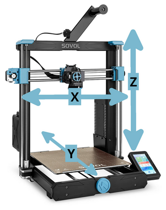

Printer setup
About the Sovol SV06 Plus
I selected the Sovol SV06 Plus for a handful of reasons:
- It has an all-metal hotend which supports a wide variety of materials
- The build area is large at 300 x 300 x 340 millimeters (300 millimeters is about a foot)
- It's an open source clone of the popular Prusa MK3S+ 3D printer. This has a number of benefits from repairability to software compatibility and community support.
Assembly
The SV06 Plus comes mostly pre-assembled except for the various body parts. Pages 3-12 of the user manual describe how to assemble the printer. Assembly largely involves:
- Attaching the gantry (vertical assembly) to the horizontal base assembly
- Attaching the extruder, power supply, mainboard, and LCD components
- Connecting the wiring harnesses to the power supply, extruder, motors, and LCD
Sovol also has an assembly tutorial video:
Info
After assembling the printer, check the voltage selector on the power supply. Mine was set to 230V out of the box. Change the selector to 115V for use in the US.
Calibration
Being 3-dimensional, a 3D printer has 3 axes: X (left to right), Y (front to back), and Z (top to bottom).
Before using the printer, the X axis and Z axis need to be calibrated. Each calibration step is explained below.

Pages 13-16 of the user manual explains how to level the printer for the first time. Sovol also has a leveling tutorial video.
Leveling the X-axis
The X-axis are the horizontal rods that the extruder moves left and right on. The SV06 Plus uses two vertical rods for the Z-axis. The X-axis needs to be physically leveled relative to the two Z-axis rods so that the X-axis and Z-axis will be square to each other.
Steps:
- Turn on the printer.
- Tap the Leveling option on the LCD.
- The printer will "home," which means the X-axis (extruder head), Y-axis (print bed), and Z-axis (vertical lift) will one at a time move all the way to the left, back, and bottom, respectively. In doing this, the printer aligns its knowledge of the extruder's overall position with its actual position. This is known as homing, auto-home, or moving to home. The Leveling menu will appear when homing is complete.
- Tap Auto Z-Align.
- The printer will slowly raise the extruder all the way to the top of the printer, and then gently press the extruder against the very top of the gantry (top bar). This causes both ends of the X-axis to move as far up as they can, which is what aligns the X-axis relative to the Z-axis.
Info
It is normal for the Z-axis motors to briefly make a skipping noise as they attempt to turn past the top height during Auto Z-Align.
- The printer will slowly lower the extruder back down to the bed and return to the leveling menu. Remain on the leveling menu for the next calibration steps.
Preparation for bed calibration
Both the print bed and nozzle are made of metal and heat up when printing. Metal expands and contracts with temperature. To simulate printing conditions for calibration, I recommend heating the nozzle and bed to a normal printing temperature before continuing.
Danger
Don't touch the print bed or the nozzle when they are heated! The nozzle is hot enough to cause a burn if touched. The bed isn't as hot but is still very warm to the touch.
Steps:
- If the Leveling menu is displayed, tap < on the LCD to return to the main menu.
- Tap the print bed temperature display, and set the temperature to 60°C. The print bed will slowly start heating until it reaches this temperature.
- Tap the nozzle temperature display, and set the temperature to 210°C. The nozzle will start heating until it reaches this temperature. The nozzle is much smaller than the print bed, so it heats more quickly than the print bed.
Warning
When the print bed / nozzle are heated from the LCD menu, they will remain at their heated temperatures until different temperatures are entered, a print job starts and completes, or the printer is switched off. The heaters can be manually turned off by setting the desired temperatures to 0°C.
- Wait until the print bed and the nozzle reach their configured temperatures.
- Tap the Leveling option on the main menu to return to the Leveling menu. The printer will move to home once again before displaying the Leveling menu.
Setting the nozzle height offset (Z-offset)
The foundation of a good 3D print is the first or base layer. To make sure the first layer of a printed object sticks to the bed, the nozzle's initial height from the bed needs to be calibrated. This height is called the Z offset, which is the difference between the printer's detected baseline height when leveling and the correctly calibrated printing height.
If the nozzle is too high, the printed object won't stick to the bed. If the nozzle is too low, the lower parts of the printed object will be squashed or bumped over by the nozzle as it moves.
The Leveling menu on the LCD will display the current Z offset value, along with controls to increase (raise) and decrease (lower) the Z offset by 0.05 or 0.01 millimeters. The goal is to set the nozzle height to approximately 0.2 millimeters higher than the bed. This can be done with a spare sheet of printer paper, which is about the right thickness.
Steps:
- Place the sheet of paper on the print bed. Remember, the bed is very warm!
- Try to gently slide the sheet of paper under the nozzle. If the paper won't slide under, tap the Z offset increase button on the LCD a few times to raise the nozzle slightly and try again. You may need to repeat this several times depending on how the printer was calibrated at the factory.
- Move the piece of paper slightly while it is underneath the nozzle. It should move freely with no resistance.
- While still slightly moving the paper under the nozzle, lower the Z offset by 0.05 millimeters at a time until you start to feel resistance while moving the paper.
- Slide the paper out from underneath the nozzle. You should feel some resistance, but the paper should not rip or tear. If it does, the nozzle is too low.
- The Z offset is now calibrated. The Z offset value will vary from one printer to another, and even from one print bed sheet to another. A normal Z offset value is often negative.
- Tap Save on the LCD so the printer will remember it later after being turned off.
Leveling the bed
The print bed is a flexible and removable sheet with a special coating, on top of a larger metal plate with a heating element that is attached to the printer.
While the print bed will appear to be flat, the bed height will vary slightly across the surface (normally fractions of a millimeter) due to manufacturing tolerances. To compensate for these variations, the printer needs to scan the bed at several points so it can compensate for this variation while printing. This is often referred to as bed leveling or leveling the bed.
The SV06 Plus has a function to automatically perform this bed leveling scan.
Steps:
- On the Leveling menu on the LCD, tap Auto-Level.
- The printer will automatically perform a scan at 25 different grid points on the heated bed, and will display progress on the LCD screen.
- When finished, the extruder will move back to the center and re-display the Leveling menu.
- The bed leveling scan is now complete. Tap Save on the LCD so the printer will remember the scan data later after being turned off.
Completing calibration
The nozzle and print bed were heated to prepare for calibrating the print bed. As the heaters were turned on manually from the main menu, they will remain set to their heated temperatures until turned off.
Steps:
- If the Leveling menu is displayed, tap < on the LCD to return to the main menu.
- Tap the print bed temperature display, and set the temperature to 0°C. The print bed heater will turn off, and the print bed will start to cool until it reaches room temperature.
- Tap the nozzle temperature display, and set the temperature to 0°C. The nozzle heater will turn off, and the nozzle will start to cool until it reaches room temperature. The nozzle is much smaller than the print bed, so it cools more quickly than the print bed.
Warning
The print bed and nozzle take some time to cool, so they will still be hot after turning the heaters off. Be careful not to touch while they are cooling.
Initial printer calibration is now complete!